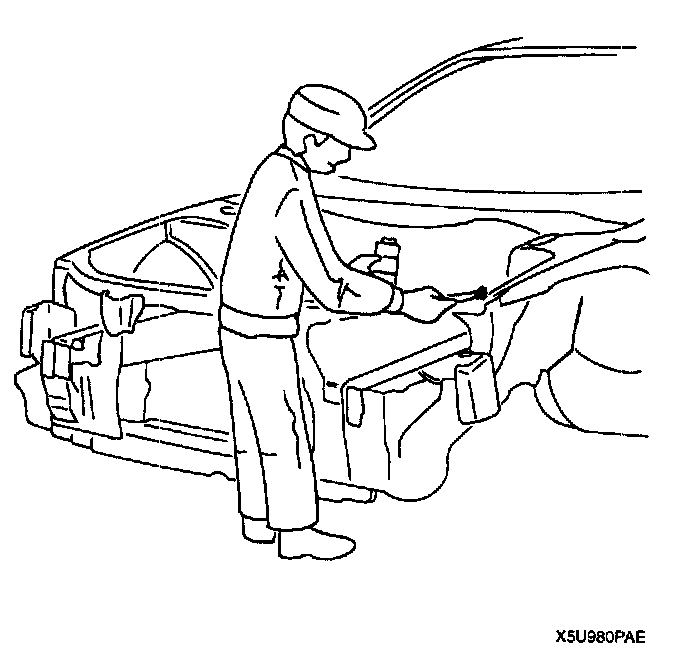
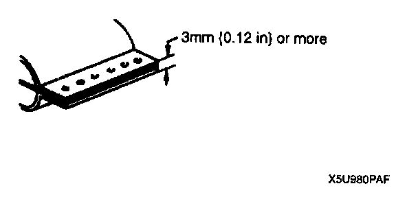
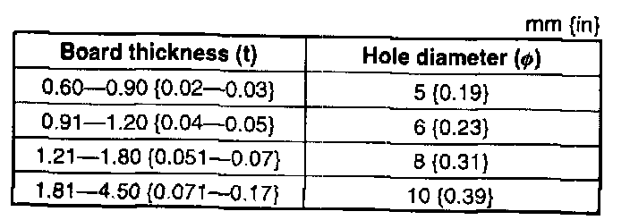
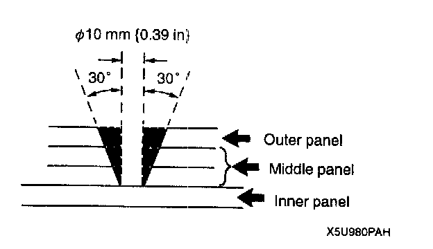
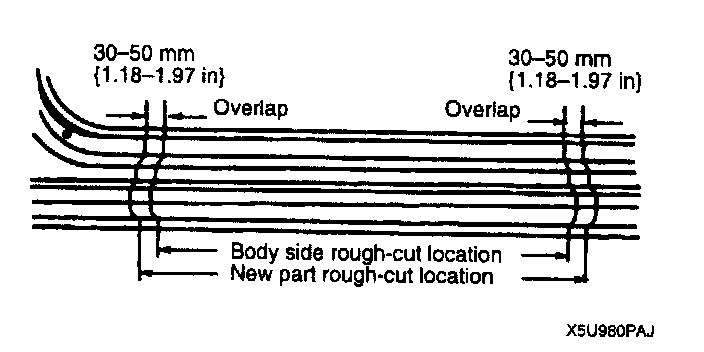

Installation Preparations
INSTALLATION PREPARATIONSApplication of Weld-through Primer

- For treatment against corrosion, remove the paint grease, and other material from the portion of new part and body to be welded, and apply weld-through primer.
Determination of Welding Method

- If the total thickness at the area to be welded is 3 mm (0.12 in) or more, use a CO(2) gas shielded-arc
Making Holes for CO(2) Arc Welding

- For places that cannot be spot welded, make a hole for CO(2) arc welding by using a punch or drill as shown.

- Grind the shaded section indicated in the diagram below and create a hole in the part where the 3-4 plates are put together. Also, weld the plates together tightly so that gaps do not develop,
Rough Cutting of New Parts

- For cut-and-join areas, allow for an overlap of 30-50 mm (1.18-1.97 in) with the remaining area on the body side and then rough-cut the new parts.